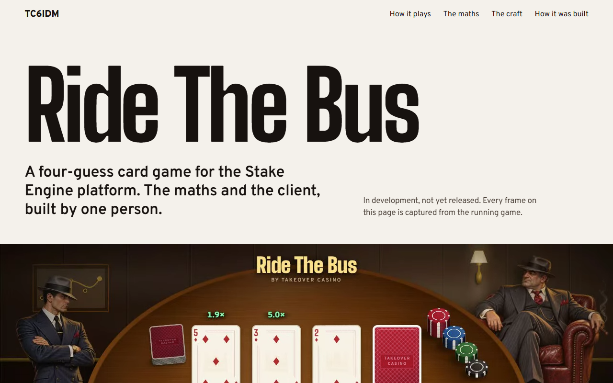
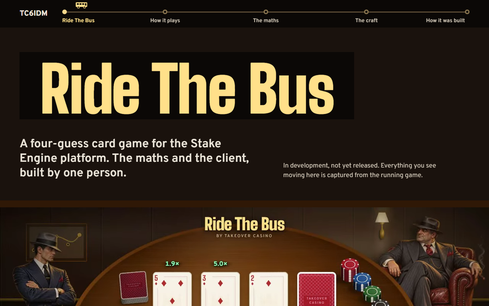
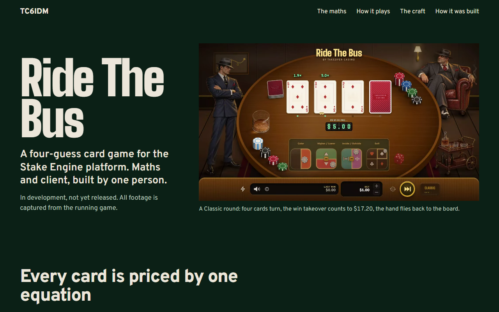

A. The case file
An editorial long read on a quiet paper page. The footage is evidence with a caption under every clip, and the maths is set as a formula and a real table.
Open direction AThree playable mock-ups for the portfolio's /ride-the-bus/ page, with the same content in each and the real captures throughout. Open each at phone and desktop width; the reasoning, weights and open questions are in NOTES.md beside this page.

An editorial long read on a quiet paper page. The footage is evidence with a caption under every clip, and the maths is set as a formula and a real table.
Open direction A
The page is the game's back room. The navigation is the takeover's route line with a bus riding it as you scroll; each heading is a destination blind and the families are a departures board.
Open direction B
The footage gets the first screen; the second is a price solver on the table's felt. Drag the chance of a guess and watch the equation solve its multiplier while the expected value stays put.
Open direction CMock-ups only, nothing is built. Every image of the game is a capture of the running game; the route line, the bus glyph and the solver's chart are drawn for the site.